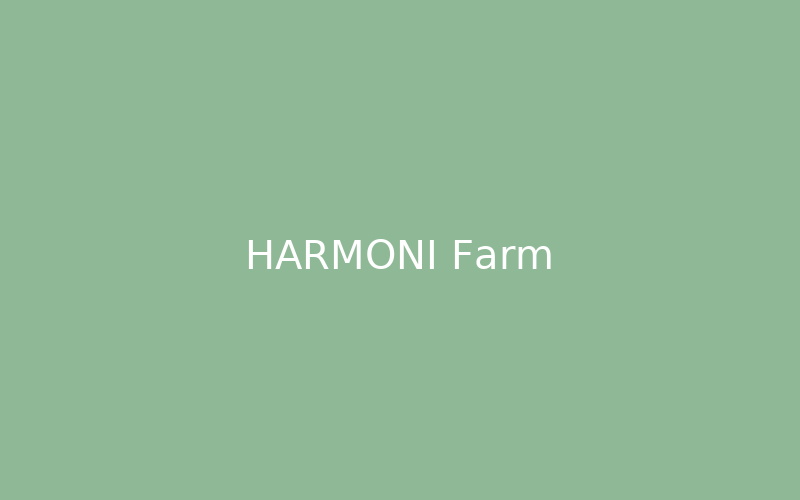
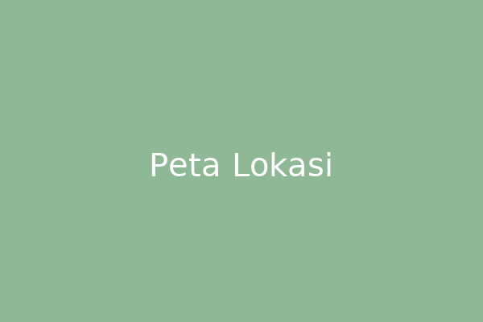

Selaras Alam, Sejahtera Bersama
HARMONI memproduksi sayuran hidroponik dan telur ayam kampung dengan prinsip keberlanjutan dan kualitas. Pesan mudah lewat WhatsApp — segar dari kebun kami ke meja Anda.

Produk Kami
Sayuran segar hasil hidroponik dan telur ayam kampung dari lahan HARMONI (1 Ha).
Tentang HARMONI
HARMONI adalah usaha agribisnis terpadu yang menggabungkan pertanian hidroponik dan peternakan ayam petelur. Kami menerapkan sistem yang ramah lingkungan, memanfaatkan limbah secara sirkular, dan menjual langsung kepada konsumen melalui kanal digital.
Kontak & Lokasi
Untuk pemesanan cepat, klik tombol WhatsApp atau hubungi nomor kami.
WhatsApp:
Alamat: Jl. Raya Karanganyar No.45, Gresik, Jawa Timur

Jam operasional: Senin–Sabtu, 07:00–16:00